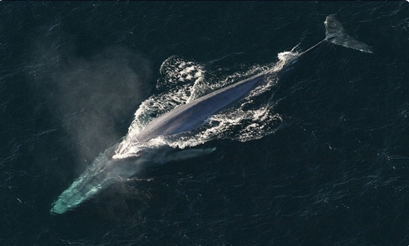
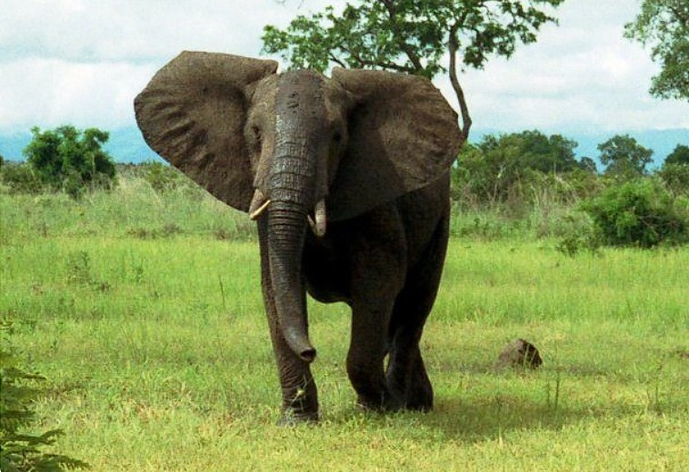
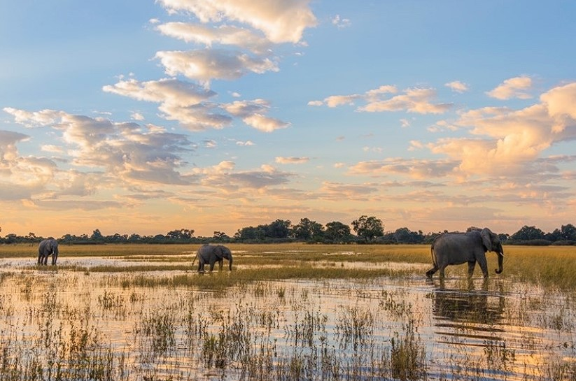
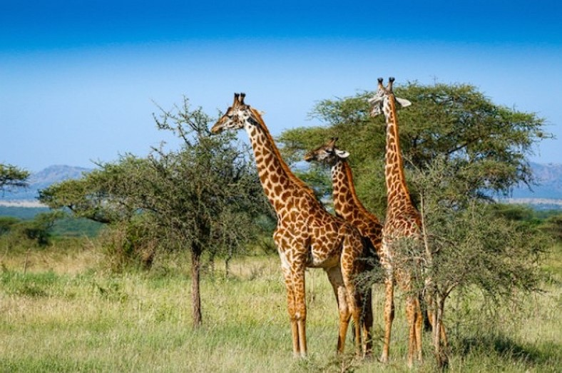
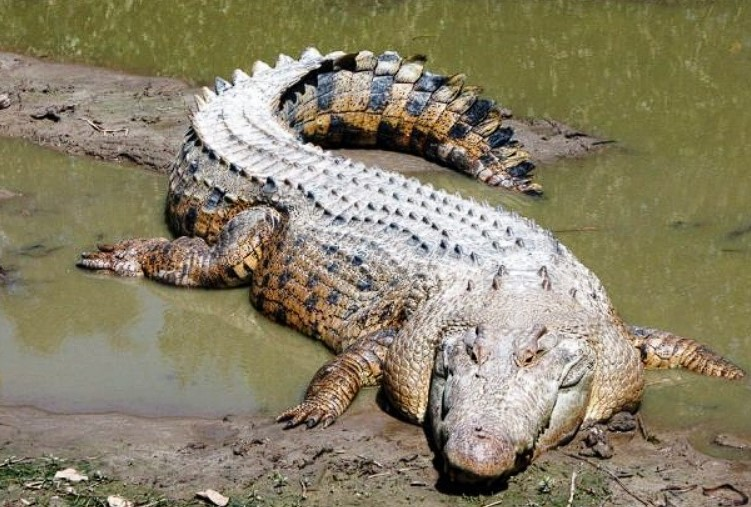
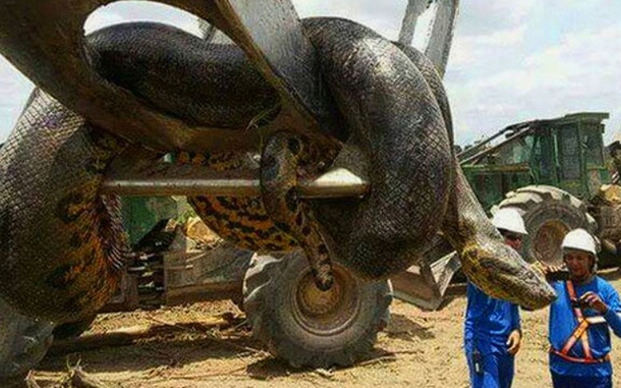

The blue whale is the largest animal that has survived on our planet to this day

African grassland elephantsare animals that live in herds in savanna areas. African grassland
elephantsrange in length from 6 to 7.5 meters, are 3.3 meters tall and weigh up to 6 tons for adults while
females are slightly smaller in size.


Giraffes have yellow fur interspersed with white. They have a gestation period of about 15
months, giving birth to only one child at a time. In size, they have a height of 4.8 to 5.5 meters and
weigh 1.3 tons for the males. The females are lower in height and weight.

Saltwater crocodile is mainly distributed in Asia. Although they are saltwater crocodiles, they
often find freshwater areas to lay eggs. Each time lays about 40 to 60 eggs. The time it takes for eggs to
hatch is about 90 days and especially the sex of the baby crocodile depends on the environmental
temperature.

Anaconda is considered the monster of the Amadon swamps. They include 4 different types: blue,
yellow, black and white spotted and giant Bolivian python. The largest species is blue, adults are up to 9
meters long and weigh 250kg. Most of the time Anaconda lives in swamps looking for food. Anacondas catch
prey by using their flexible bodies to wrap their prey to death.